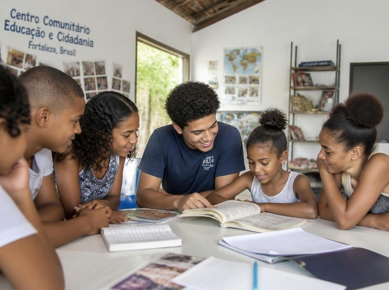
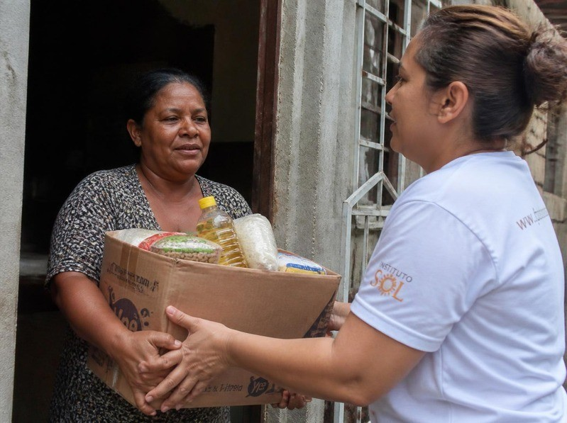
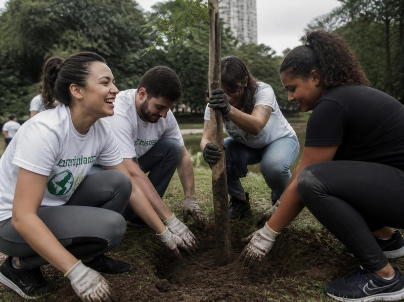

Educação e Capacitação
Desenvolvemos atividades educativas, oficinas e cursos para ampliar o acesso ao conhecimento e criar novas oportunidades para crianças, jovens e adultos.
Juntos por um futuro melhor.
Conheça as iniciativas da ONG Recomeçar e descubra como nossas ações contribuem para transformar a comunidade.

Desenvolvemos atividades educativas, oficinas e cursos para ampliar o acesso ao conhecimento e criar novas oportunidades para crianças, jovens e adultos.

Promovemos campanhas e ações de assistência destinadas a famílias que enfrentam situações de vulnerabilidade, buscando oferecer apoio e melhores condições de vida.

Incentivamos a participação de voluntários em ações comunitárias, criando oportunidades para que cada pessoa possa contribuir com seu tempo e suas habilidades.